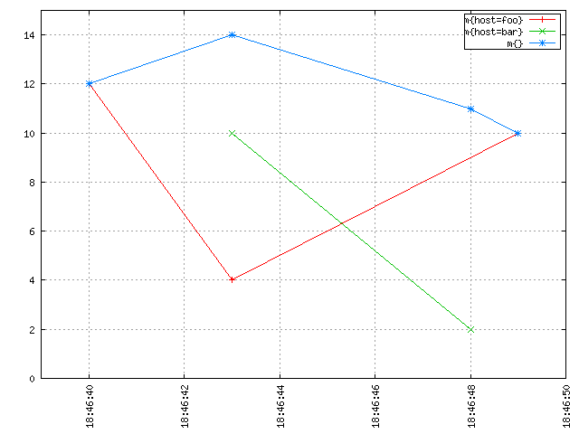
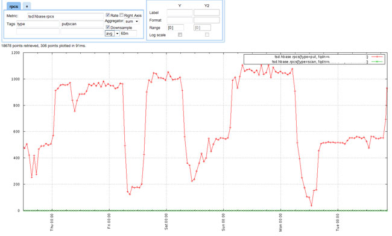

Queries
OpenTSDB offers a number of means to extract data such as CLI tools, an HTTP API and as a GnuPlot graph. Querying with OpenTSDB’s tag based system can be a bit tricky so read through this document and checkout the following pages for deeper information. Example queries on this page follow the HTTP API format.
Query Components
OpenTSDB’s query language is fairly simple but flexible. Each query has the following components:
| Parameter | Date Type | Required | Description | Example |
|---|---|---|---|---|
| Start Time | String or Integer | Yes | Starting time for the query. This may be an absolute or relative time. See Dates and Times for details | 24h-ago |
| End Time | String or Integer | No | An end time for the query. If the end time is not supplied, the current time on the TSD will be used. See Dates and Times for details. | 1h-ago |
| Metric | String | Yes | The full name of a metric in the system. Must be the complete name. Case sensitive | sys.cpu.user |
| Aggregation Function | String | Yes | A mathematical function to use in combining multiple time series | sum |
| Tags | String | No | An optional set of tags for filtering or grouping | host=*,dc=lax |
| Downsampler | String | No | An optional interval and function to reduce the number of data points returned | 1h-avg |
| Rate | String | No | An optional flag to calculate the rate of change for the result | rate |
Times
Absolute time stamps are supported in human readable format or Unix style integers. Relative times may be used for refreshing dashboards. Currently, all queries are able to cover a single time span. In the future we hope to provide an offset query parameter that would allow for aggregations or graphing of a metric over different time periods, such as comparing last week to 1 year ago. See Dates and Times for details on what is permissible.
Tags
Every time series is comprised of a metric and one or more tag name/value pairs. Since tags are optional in queries, if you request only the metric name, then every metric with any number or value of tags will be returned in the aggregated results. For example, if we have a stored data set:
sys.cpu.user host=webserver01,cpu=0 1356998400 1
sys.cpu.user host=webserver01,cpu=1 1356998400 4
sys.cpu.user host=webserver02,cpu=0 1356998400 2
sys.cpu.user host=webserver02,cpu=1 1356998400 1
and simply craft a query start=1356998400&m=sum:sys.cpu.user, we will get a value of 8 at 1356998400 that incorporates all 4 time series.
If we want to aggregate the results for a specific group, we can filter on the host tag. The query start=1356998400&m=sum:sys.cpu.user{host=webserver01} will return a value of 5, incorporating only the time series where host=webserver01. To drill down to a specific time series, you must include all of the tags for the series, e.g. start=1356998400&m=sum:sys.cpu.user{host=webserver01,cpu=0} will return 1.
Note
Inconsistent tags can cause unexpected results when querying. See Writing Data for details.
Grouping
A query can also aggregate time series with multiple tags into groups based on a tag value. Two special characters can be passed to the right of the equals symbol in a query:
- * - The asterisk will return a separate result for each unique tag value
- | - The pipe will return a separate result only for the exact tag values specified
Let’s take the following data set as an example:
sys.cpu.user host=webserver01,cpu=0 1356998400 1
sys.cpu.user host=webserver01,cpu=1 1356998400 4
sys.cpu.user host=webserver02,cpu=0 1356998400 2
sys.cpu.user host=webserver02,cpu=1 1356998400 1
sys.cpu.user host=webserver03,cpu=0 1356998400 5
sys.cpu.user host=webserver03,cpu=1 1356998400 3
If we want to query for the average CPU time across each server we can craft a query like start=1356998400&m=avg:sys.cpu.user{host=*}. This will give us three results:
- The aggregated average for sys.cpu.user host=webserver01,cpu=0 and sys.cpu.user host=webserver01,cpu=1
- The aggregated average for sys.cpu.user host=webserver02,cpu=0 and sys.cpu.user host=webserver02,cpu=1
- The aggregated average for sys.cpu.user host=webserver03,cpu=0 and sys.cpu.user host=webserver03,cpu=1
However if we have many web servers in the system, this could create a ton of results. To filter on only the hosts we want you can use the pipe operator to select a subset of time series. For example start=1356998400&m=avg:sys.cpu.user{host=webserver01|webserver03} will return results only for webserver01 and webserver03.
Aggregation
A powerful feature of OpenTSDB is the ability to perform on-the-fly aggregations of multiple time series into a single set of data points. The original data is always available in storage but we can quickly extract the data in meaningful ways. Aggregation functions are means of merging two or more data points for a single time stamp into a single value. Functions currently included with OpenTSDB are:
- Sum - Adds all data points together
- Avg - Calculates the arithmetic mean across all data points, i.e. the sum of all values divided by the total number of values.
- Max - Returns only the maximum value for all data points
- Min - Returns only the minimum value for all data points
- Dev - Returns the standard deviation across all data points
Why is an aggregation fuction always required when making a query? Unfortunately the TSD doesn’t know ahead of time whether your query will return a single time series or if it will match more than one. Thus some kind of aggregation function must be declared in the event multiple time series are found. The authors didn’t want to presume a default so you are forced to choose one every time. However if only one time series is returned, the aggregation function won’t modify the data if you know that your query will only match a single series, you can specify any function you like.
Interpolation
When performing an aggregation, what happens if the time stamps of the data points for each time series fail to line up? Say we record the temperature every 5 minutes in different regions around the world. A sensor in Pairs may send a temperature of 27c at 1356998400. Then a sensor in San Franciso may send a value of 18c at 1356998430, 30 seconds later. Antartica may report -29c at 1356998529. If we run a query requesting the average temperature, we want all of the data points averaged together into a single point. This is where interpolation comes into play. Interpolation is a way of estimating the value of a data point at a specific time using known values. Without interpolation we would get three separate data points, each reflecting the original value. The following graphs illustrates this quite well.
An imaginary metric named m is recorded in OpenTSDB. The “sum of m” is the blue line at the top resulting from a query like start=1h-ago&m=sum:m. It’s made of the sum of the red line for host=foo and the green line for host=bar:
It seems intuitive from the image above that if you “stack up” the red line and the green line, you’d get the blue line. At any discrete point in time, the blue line has a value that is equal to the sum of the value of the red line and the value of the green line at that time. Without interpolation, you get something rather unintuitive that is harder to make sense of, and which is also a lot less meaningful and useful:

Notice how the blue line plumets down to the green data point at 18:46:48. No need to be a mathematician or to have taken advanced maths classes to see that interpolation is needed to properly aggregate multiple time series together and get meaningful results.
At the moment OpenTSDB only supports `linear interpolation <http://en.wikipedia.org/wiki/Linear_interpolation>`_ (sometimes shortened “lerp”) for sake of simplicity. Patches are welcome for those who would like to add other interpolation methods.
Interpolation is only performed at query time when more than one time series are found to match a query. Many metrics collection systems interpolate on write so that you original value is never recorded. OpenTSDB stores your original value and lets you retreive it at any time.
Here is another slightly more complicated example that came from the mailing list, depicting how multiple time series are aggregated by average:

The thick blue line with triangles is the an aggregation with the avg function of multiple time series as per the query start=1h-ago&m=avg:duration_seconds. As we can see, the resulting time series has one data point at each timestamp of all the underlying time series it aggregates, and that data point is computed by taking the average of the values of all the time series at that timestamp. This is also true for the lonely data point of the squared-purple time series, that temporarily boosted the average until the next data point.
Down Sampling
OpenTSDB can ingest a large amount of data, even a data point every second for a given time series. Thus queries may return a large number of data points. Accessing the results of a query with a large number of points from the API can eat up bandwidth. High frequencies of data can easily overwhelm Javascript graphing libraries, hence the choice to use GnuPlot. Graphs created by the GUI can be difficult to read, resulting in thick lines such as the graph below:

Down sampling can be used at query time to reduce the number of data points returned so that you can extract better information from a graph or pass less data over a connection. Down sampling requires an aggregation function and a time interval. The aggregation function is used to compute a new data point across all of the data points in the specified interval with the proper mathematical function. For example, if the aggregation sum is used, then all of the data points within the interval will be added together into a new value. If avg is chosen, then the average of all data points within the interval will be returned.
Intervals are specified by a number and a unit of time. For example, 30m will aggregate data points every 30 minutes. 1h will aggregate across an hour. See Dates and Times for valid relative time units. Do not add the -ago to a down sampling query.
Note
When down sampling a time series with irregularly spaced data points, the average of all time stamps in the interval will be used to calculate a new time stamp for the down sampled data point. This means a graph may show varying gaps between values. Future versions of OpenTSDB may normalize the timestamp on even boundaries.
Using down sampling we can cleanup the previous graph to arrive at something much more useful:
Rate
A number of data sources return values as constantly incrementing counters. One example is a web site hit counter. When you start a web server, it may have a hit counter of 0. After five minutes the value may be 1,024. After another five minutes it may be 2,048. The graph for a counter will be a somewhat straight line angling up to the right and isn’t always very useful. OpenTSDB provides the rate key word that calculates the rate of change in values over time. This will transform counters into lines with spikes to show you when activity occurred and can be much more useful.
The rate is the first derivative of the values. It’s defined as (v2 - v1) / (t2 - t1). Therefore you will get the rate of change per second.
Order of operations
Understanding the order of operations is important. When returning query results the following is the order in which processing takes place:
- Grouping
- Interpolation
- Down Sampling
- Aggregation
- Rate Calculation